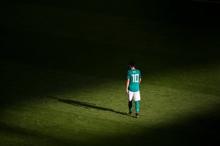

“The Lionesses will be out of Euro 2025 after two games if they lose to the Netherlands on Wednesday and France avoid defeat against Wales,” laments Sarah Cassidy. “Would that be the earliest a defending champion has been eliminated at a majo r international tournament?”
In a less deathly group, England’s 2-1 defeat by France on Saturday would have been a wake-up call rather than a final warning. But that’s what it was, and if England lose to the Netherlands their title defence will probably be over after two games. Even a draw would leave them needing favours from other teams.
England are in serious danger become the first defending champions to go out at the group stage of the Women’s World Cup, Women’s Euros or the Copa América Femenina. Never mind getting out of the group; across those three tournaments, the holders have retained the trophy more often than not. The current score is 14-13, though England could unwillingly make it 14-14.
Brazil and Germany are responsible for 13 of the first retentions: six apiece in continental competition, plus Germany’s second successive World Cup triumph in 2007 . The USWNT team that ruled the world in 2015 and 2019 complete the list.
Success of that nature is not why we’re here. We’re here to talk about numbing, end-of-an-era disappointment – the kind experienced by the USWNT at the last World Cup . They lost an extraordinary penalty shootout to Sweden in the round-of-16, thus becoming the first reigning champions to fail to reach the quarter-finals.
Sophia Smith, Megan Rapinoe and Lindsey Horan (left to right) console each other following their World Cup exit in 2023.Photograph: Jose Breton/NurPhoto/Shutterstock
All the women’s European champions have reached the last eight in their title defence. Most have gone further. It’s only in the last two competitions that the champions have gone out in the quarter-finals. In 2017, Germany – who were aiming for a seven peat after winning every tournament since 1995 – were stunned 2-1 by Denmark . Five years later the Netherlands were beaten 1-0 by France after extra time.
Denmark celebrate victory Germany at Euro 2017.Photograph: Christopher Lee/Uefa/Getty Images
At the Copa América Femenina, the reigning champions have only failed to win the competition twice. On both occasions they finishing among the also-rans in the second and final group stage. Brazil were just pipped by Argentina in 2006 to end a run of four straight later. Argentina finished bottom four years later, but it wasn’t until their sixth game of the competition that they were formally out of contention.
Since the big three tournaments grew to 16 teams or more, no women’s team has been dethroned in fewer than four games. But there are different flavours of disappointment in football, and sometimes a semi-final exit can be the most crushing of all. At the 1999 World Cup, the defending champions Norway won their first four games with an aggregate score of 16-3. That took them into a semi-final against China – where they were hammered 5-0 .
Technically Sweden (1987) and Norway (1991) were knocked out of the European Championship after only two matches, and Germany (1993) after just one. That’s because the tournament proper started at the semi-final stage, so we’re into apples and pears territory. England will hope things don’t go pear-shaped – oh never mind.
If you want to see champions tripping over their own shoelaces on a regular basis, you need more men’s football in your life. The holders have gone out at the group stage in three of the last four World Cups: Italy in 2010 , Spain in 2014 and Germany in 2018 .
Mesut Özil trudges off the pitch after Germany’s defeat by South Korea in 2018.Photograph: Michael Regan/Fifa/Getty Images
Spain are one of the few teams to be officially out of the competition with one of their three group games still to play. They were stunned 5-1 by the Netherlands, then put out of their misery five days later by Chile, during which Sid Lowe gave a masterclass in how to write an on-the-whistle report .
Brazil (1966) and France (2002) are also on the list of champions who went home after three group games. Brazil lost to superb opposition in Hungary and Portugal; France didn’t even score a goal in Japan and Korea.
France’s Zinedine Zidane contemplates an early World Cup exit in 2002.Photograph: Charles Platiau/Reuters
In 1950, Italy were technically eliminated after only one game, though for Knowledge purposes there’s at least one asterisk against their failure. The structure of the competition meant the group had three or even two teams, with only the winners going through. Italy lost a fine match 3-2 to Sweden, who then drew with Paraguay four days later. That meant Italy were out before beating Paraguay 2-0 in their other group game. The other asterisk is that Italy’s side had been devastated by the Superga air disaster in 1949 .
Five holders have gone at the group stage in the men’s Euros: Czechoslovakia (1980), West Germany (1984, thanks to a Hitchcockian twist ), Denmark (1996), Germany (2000) and Greece (2008). Of those, we think only Greece were mathematically out after two matches.
The holders didn’t even qualify in 1968 and 1972, but again we need to press the SHIFT and 8 keys. The European Championship was a four-team competition in those days, with the quarter-finals part of the qualification campaign. The reigning champions, Spain and Italy , both reached the last eight after winning their groups, so they hardly stank the place out.
Uruguay’s Copa América defence of 1997 barely got going; they went out after their third and final group game. We think Peru (1979) and Paraguay (1983) are the only champions to go after two games, though this is largely down to the competition structure. Both were given a bye to two-legged semi-finals, which they lost to Chile and Brazil respectively. And Paraguay didn’t even lose: after a 1-1 aggregate draw, lots were drawn and Brazil went through.
Do you have any examples from the other confederations? If so, drop us a line .
Non top-flight teams playing in Europe (3)
In recent weeks we’ve been looking at lower-division teams who played in European competitions. The original question was specifically about English clubs, but what self-respecting football column can resist a trip to the golden age of Serie A. And Serie B.
“ Atalanta Bergamo reached the semi-final of the Cup Winners’ Cup in 1987-88 before losing to the eventual winners Mechelen,” writes Knowledge regular Bogdan Kotarlic. “It is the furthest that one non top-flight team reached in the major European competitions.
“Mechelen won the first leg 2-1 in Belgium. Atalanta were leading 1-0 at half-time in Bergamo, which meant they were ahead on away goals, but Mechelen scored twice in the second half to win 4-2 on aggregate. It is still one of the most beautiful stories in the history of Italian football.”
Atalanta had been relegated from Serie A the previous season, when they also reached the final of the Coppa Italia. They were beaten 4-0 on aggregate by Diego Maradona’s Napoli – but as Napoli already had business in the European Cup, Atalanta took their place in the Cup Winners’ Cup.
Their run to the semi-finals started with a narrow win over Merthyr Tydfil, a famous tie that we mentioned in a previous Knowledge question about non-league sides in European competition .
SILVA’S RARE TREBLE
“Thiago Silva World Cup: he played for three of the four clubs in the semi-final of the Club World Cup,” notes Murilo Pasta. “Has there been a similar situation involving another player?”
Two come straight to mind. Achraf Hakimi played for Paris Saint-Germain against Borussia Dortmund, one of his old clubs, in the Champions League semi-final in 2023-24. The other tie was between Real Madrid, where Hakimi started his professional career, and Bayern Munich.
A dejected Arjen Robben holds his head in his hands after Bayern’s defeat to Chelsea in the 2012 Champions League final.Photograph: Matthew Ashton/Corbis/Getty Images
Those two old bruisers also met in the semi-final in 2011-12, when Arjen Robben scored a crucial penalty to help Bayern beat Real, where he spent two years in the late 2000s. Robben then missed a penalty in extra-time of the final against another old club, Chelsea. You know the rest .
Can anyone get four out of four? Let’s keep it to those who, like Thiago Silva, Hakimi and Robben, actually played in one of the semi-finals.
CORRECTIONS CORNER
Last week we led with a question about European champions who have beaten the most (and fewest) domestic champions in the process. No Knowledge column would be complete without at least one error, and we didn’t let you down on that score.
We said there were eight teams who had vanquished six champions on the road to glory. In fact Pete Tomlin’s original email was correct and the total should be six.
The two we got wrong were:
- Milan 1993-94 They beat five champions (Aarau, FC Copenhagen, Porto, Werder Bremen & Barcelona) rather than six. The other teams they played were Belgian champions Anderlecht (two 0-0 draws in the group stage) and Monaco (who were beaten 3-0 in the one-legged semi-final but had only finished third in France the previous season).
- Barcelona 2014-15 So good we counted them twice.
KNOWLEDGE ARCHIVE
“In 1982, a First Division side had six past and future England captains in the same team. Which team was this?” asked one knowledge-hungry reader whose name we’d inexplicably lost under a mountain of Knowledge emails, back in February 2003 .
This one was a doddle. Mick Channon, Dave Watson, Peter Shilton, Kevin Keegan, Mick Mills and Alan Ball all played for Southampton during the calendar year of 1982. Interestingly, when the team shed some of these England legends over the following season – Channon, Watson, Keegan, Ball – the team improved dramatically and almost won the title in 1984. Does this say anything about England? We’re not sure.
Can you help?
“ Last week’s Knowledge noted that Liverpool’s 2004-05 side beat the joint-fewest reigning champions en route to winning the Champions League. One thing that struck me though was that they did beat three champions-to-be: Olympiakos, Juventus and Chelsea. What is the most a team has managed on the way to becoming champions of Europe?” asks Ravi Hiranand.
“Arsenal have just signed a new keeper, Kepa ,” notes John Marsden. “Are there any other examples of players with a name so similar to their position?”
“Ethan Galbraith’s move to Swansea means Leyton Orient’s five record sales are spread over five decades (Gabby Zakuani in the 2000s, Moses Odubajo in the 2010s, John Chiedozie in the 1980s and Adrian Whitbread in the 1990s in case you were wondering). Surely no other club has such a consistent record of flogging one half-decent player every decade?” wonders Rich Browne.
- Mail us with your questions and answers